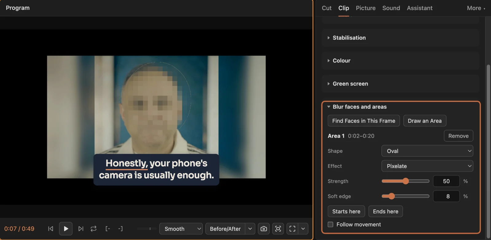

Blur faces and areas
Hide a face, a number plate or a screen: pick it once, and the blur follows it as it moves.

Pick what to hide
Select the clip and open Clip › Blur faces and areas.
- Find Faces in This Frame, then Click the face to hide. Faces are found best with the face model, downloaded once and run on this computer; Download the Face Model offers it.
- Draw an Area for anything else.
How it looks
- Blur or Pixelate; Box or Oval.
- Strength, and Soft edge: how far past the region the blur fades out. Inside the region it is always at full strength.
Follow and time it
- Follow movement tracks the face or area through the clip. After a change, Follow again before you export.
- Starts here and Ends here limit it to a stretch, from the playhead.
Check it
Where the face was lost, the list says Check … with the time: the blur held its place and grew, or moved to someone who took that place. Look at each flagged stretch. If the blurred person leaves the picture and someone else stands in the same place, the blur may stay on the wrong person: blur is not a guarantee, so watch the result.
With several cameras, each camera is picked on its own (Pick on This Camera).